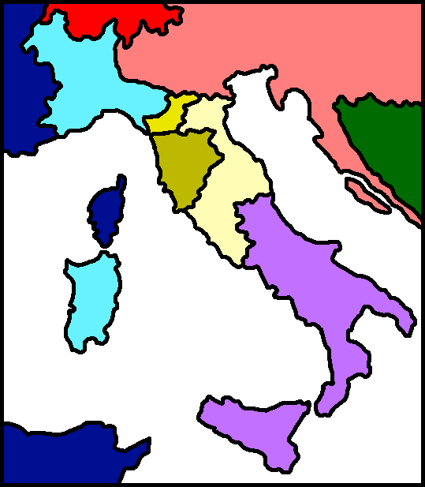
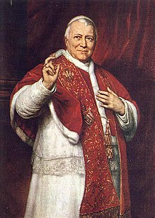
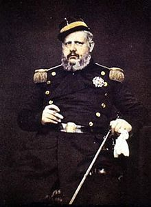
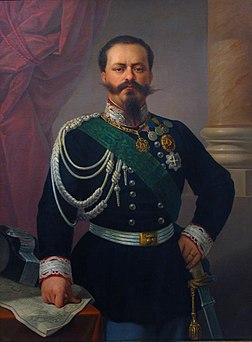
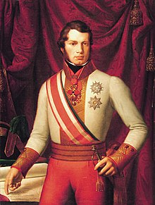
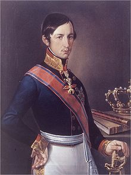
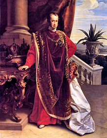
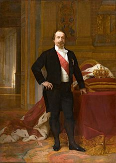

|  |
The Papal States, officially known as the State of the Church, were several territories on the Italian Peninsula ruled directly under the pope.
|  |
The Kingdom of the Two Sicilies was the largest of the states of Italy before the Italian unification. It was formed as a union between the Kingdom of Sicily and the Kingdom of Naples.
|  |
The Kingdom of Sardinia was a nation in Northern Italy. This nation originally consists of the territory of Savoy and the island of Sardinia. The nation is sometimes known as Piedmont-Sardinia to emphasize that the island of Sardinia was a secondary importance to the monarchy.
|  |
The Grand Duchy of Tuscany was a monarchy located in Central Italy. The grand duchy's capital was Florence. Tuscany was a state of the Holy Roman Empire until the Treaty of Campo Formio in 1797.
|  |
The Duchy of Modena and Reggio was a small northwestern Italian state. This country was part of the Holy Roman Empire.
Switzerland, officially the Swiss Confederation, is a federal republic in Europe. It consists of 26 cantons, and the city of Bern is the seat of the federal authorities. The country is situated in Western-Central Europe, and is bordered by Italy to the south, France to the west, Germany to the north, and Austria and Liechtenstein to the east. Switzerland has existed since the 13th Century.
|  |
The Austrian Empire was a Central European multinational great power from 1804 to 1867 created by proclamation out of the realms of the Habsburgs. It was the third most populous empire after Russia and France. Along with Prussia, it was one of the two major powers of the German Confederation. The nation later changed to become the nation of Austria-Hungary.
|  |
The French Second Republic was a short-lived republican government of France between the 1848 Revolution and the 1851 coup by Louis-Napoléon Bonaparte which initiated the Second Empire.
The Ottoman Empire was an empire founded at the end of the 13th century in northwestern Anatolia in the town of Söğüt by the Oghuz Turkish tribal leader Osman. After 1354, the Ottomans crossed into Europe, and with the conquest of the Balkans, the Ottoman Beylik was transformed into a transcontinental empire. The Ottomans ended the Byzantine Empire with the 1453 conquest of Constantinople by Mehmed the Conqueror. This nation is unimportant to the unification of Italy.